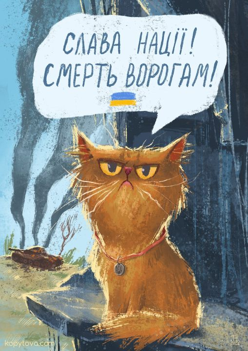
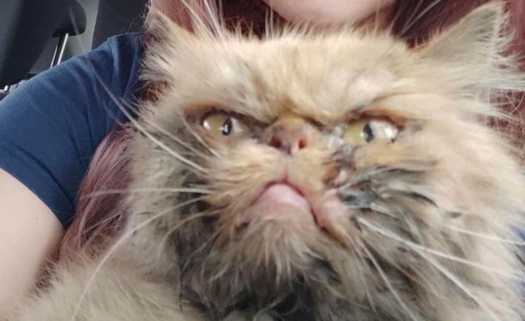
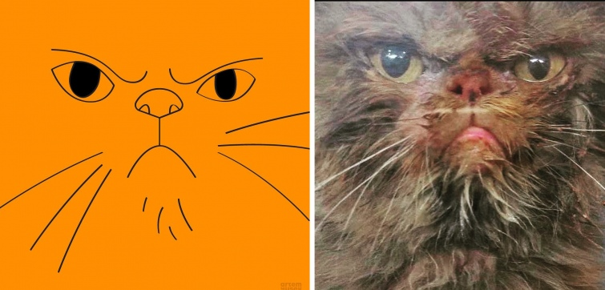
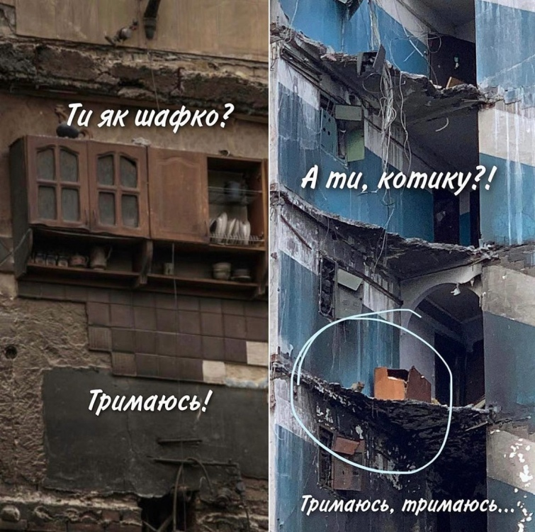
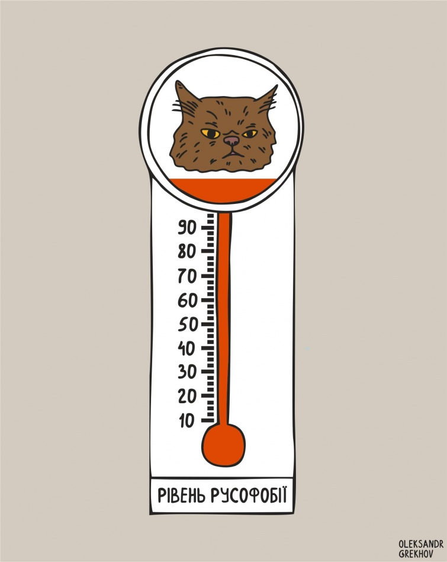
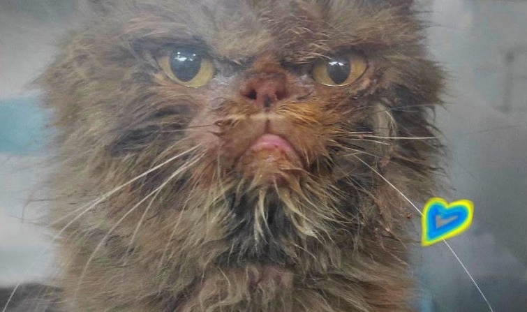

У Бородянці врятували котика зі зруйнованої багатоповерхівки.
До спецоперації залучили техніку з сусіднього містечка. Рятувальники разом з Зоопатрулем пригнали автодрабину, щоб дістати тварину з 7 поверху.
Скільки вона провела там часу – достеменно не відомо, можливо й два місяці.
Покинутий і самотній домашній улюбленець – кіт персидської породи, тому має плесковату морду. Його незадоволений вираз вже розлетівся мережею.
"Українська правда. Життя" зібрала народну творчість у мемах.
Користувачі зазначають, що вираз морди тварини чітко відповідає внутрішній злості та ненависті до росіян.
Візуал про кицю створила Тетяна Копитова.
Ця врятована з 7 поверху зруйнованої будівлі у Бородянці киця – наче всі ми.
Ілюстрація Тетяни Копитової
"Колись напишуть дитячі і дорослі книжки про трьох друзів Шафку, Півника і Котика.Бо ми всі – шафка, півник і котик із Бородянки" , – зазначив Олександр Мікхед.
Фото на сторінці Олександра
Артем Гусев зазначив, що "киця з Бородянки – це обличчя українського народу. Побитого, але не скореного! Живого та сповненого люті!"
Колаж на сторінці Артема Гусева
Як шафка, так і котик з Бородянки тримаються.
Мем зі сторінки Ольги Шавериної
Ілюстратор Олександр Греков створив новий котометр. Він підписав малюнок: "Тепер у нас є універсальний рівень: від 0 до "врятована киця з Бородянки". У кого сьогодні який?"
Ілюстрація Олександра Грекова
"Тотемна тварина", – підписала фото морди кота Аліна Полякова.
Фото зі сторінки Аліни Полякової
Робота дизайнера Олексія Пильова